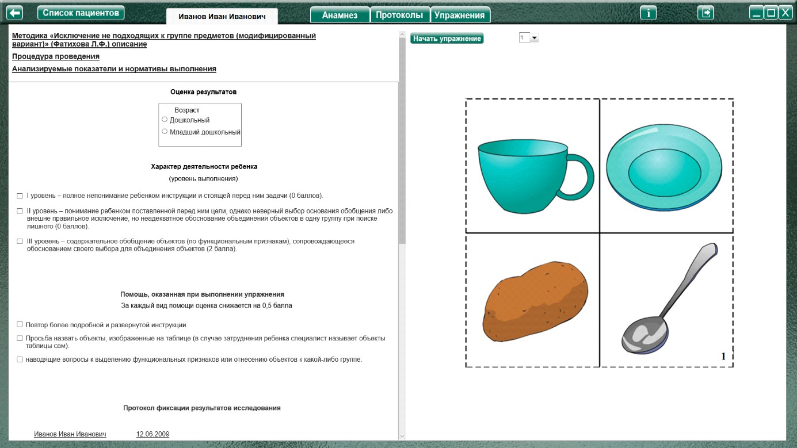
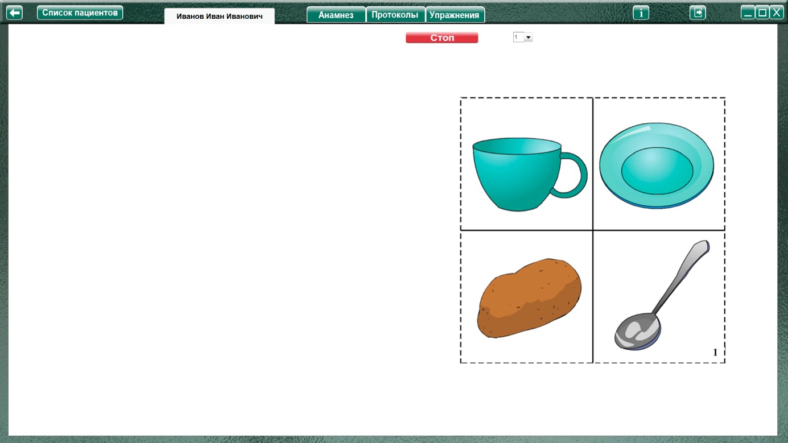

Методика «Исключение не подходящих к группе предметов»
(Фатихова Л.Ф.)
Методика «Исключение не подходящих к группе предметов» (Фатихова Л.Ф.) описание
Процедура проведения.
На каждой из таблиц изображено по четыре предмета, один из которых существенно отличается от остальных. Перед ребенком кладут таблицу и говорят:
«Рассмотри таблицу. На ней четыре предмета. Три предмета похожи между собой. Их можно назвать одним словом. Четвертый предмет к ним не подходит. Назови (покажи) неподходящий предмет».
Чтобы понять, действительно ли за исключением предмета стоит верное обоснование, задается вопрос: «Почему ты считаешь, что это лишнее (это не подходит)?».
Анализируемые показатели и нормативы выполнения
I уровень – полное непонимание ребенком инструкции и стоящей перед ним задачи (0 баллов).
II уровень – понимание ребенком поставленной перед ним цели, однако неверный выбор основания обобщения либо внешне правильное исключение, но неадекватное обоснование объединения объектов в одну группу при поиске лишнего (0 баллов).
III уровень – содержательное обобщение объектов (по функциональным признакам), сопровождающееся обоснованием своего выбора для объединения объектов (2 балла).
Виды помощи
Максимальное количество баллов за выполнение 10 серий методики составляет 20 баллов. За каждый предъявляемый вид помощи от общего количества баллов отнимается 0,5 балла.
Анализ результатов
Группы детей |
Возраст |
Баллы |
Нормально развивающиеся дети. |
Дошкольный |
16-20 |
Младший школьный |
17,5-20 |
|
Дети с задержкой психического развития. |
Дошкольный |
4-10 |
Младший школьный |
14-20 |
|
Дети с умственной отсталостью. |
Дошкольный |
0-6 |
Младший школьный |
6-12 |
Нормально развивающиеся дети, начиная с дошкольного возраста, понимают задание и находят неподходящий предмет. Таким образом, они не нуждаются в уточнении инструкции (первый вид
помощи). При этом они способны гибко переходить от одного основания обобщения к другому.
Дошкольники, в отличие от младших школьников, не всегда называют обобщающие слова-
понятия, хотя аргументация исключения предмета из группы говорит о способности дошкольников обобщать предметы по существенным признакам. Если в некоторых сериях диагностической методики у детей и возникают трудности, им, как правило, достаточно второго вида помощи для выполнения задания (стимулирующая помощь).
Детям с ЗПР дошкольного возраста малодоступно действие обобщения. В этом возрасте деятельность обобщения детей с ЗПР (особенно в условиях отсутствия коррекционно-развивающего
обучения) имеет много сходного с деятельностью дошкольников с умственной отсталостью: дети затрудняются в выделении «лишнего предмета» даже в условиях больших доз помощи, демонстрируя I или II уровни выполнения.
Младшие школьники с ЗПР уже самостоятельно или с небольшой дозой помощи (второй вид) могут производить исключение лишнего предмета по существенным признакам, однако в ряде случаев формулирование обобщающего понятия вызывает у них затруднения. Обобщающие понятия в этих случаях они заменяют названиями функций предметов: вместо «одежда» – «чтобы одеть», вместо «фрукты» – «на дереве растет» и т.п.
Дети с умственной отсталостью дошкольного возраста часто не понимают поставленной задачи, показывая I уровень выполнения, если и производят, то «псевдобобщения» – объединяют предметы по случайным признакам, которые не носят даже формализованный характер, или при внешне правильном обобщении дают неадекватную аргументацию объединения (II уровень). Все предъявляемые виды помощи в большинстве случаев не приводят к результату.
Младшие школьники с умственной отсталостью уже способны к некоторым обобщениям по функциональным признакам и способны даже правильно аргументировать действие исключения лишнего предмета, однако такие обобщения характерны при выполнении заданий, где задействованы предметы, включенные в житейский опыт детей, обобщение которых дети неоднократно производили. При неправильном обобщении все виды помощи, как и в случае с дошкольниками, оказываются неэффективными.
Оценка результатов
Характер деятельности ребенка
(уровень выполнения)
Виды возможной помощи:
За каждый вид помощи оценка снижается на 0,5 балла
Протокол фиксации результатов исследования
_________________________________ _______________
ФИО Дата рождения
Методика |
Исключение не подходящих к группе предметов (модифицированный вариант) |
||||
Автор методики (адаптации, модификации) |
Фатихова Л.Ф. |
||||
Цель: |
1) исследовать способность видеть в объектах их существенные признаки, делать на этой основе необходимые обобщения; 2) выявить способность устанавливать сходство и различие между зрительно воспринимаемыми изображениями. |
||||
Дата / специалист |
|||||
Результат: баллы (макс.) / вывод об уровне развития |
|||||
Примечание |
|||||
Процесс выполнения диагностического задания |
|||||
№ | Выбранная картинка |
Объяснение выбора |
Характер деятельности ребенка |
Виды помощи |
Баллы |
Итоговая оценка |
|||||

Логика заполнения протокола
Заполняется автоматически
Имя специалиста – логин при входе в программу.
Дата –дата и время прохождения упражнения в формате дд.мм.гггг.
Результат: баллы (макс.) – кол-во баллов дублируется из ячейки «Итоговая оценка» (макс. 20).
«Характер деятельности ребенка», «Виды помощи» заполняются в зависимости от выбора специалистом соответствующих пунктов в разделе «Оценка результатов». Характер деятельности ребенка вносится без значения баллов (в скобках).
Баллы – числовые значения (в скобках) из пунктов «Характер деятельности ребенка» (уровень выполнения)
Итоговая оценка – сумма баллов за все упражнения. Заполняется после формирования протокола по всем выполненным заданиям по нажатию кнопки «Подвести итог». Остальные ячейки заполняются специалистом самостоятельно.
Выполнения упражнения

Выбрать номер задания и нажать кнопку «Начать упражнение», закрывая область оценки результата и открывая задание на весь экран.

Выполнить задание согласно пункту «Процедура проведения». По окончании задания нажать кнопку «Стоп», открывая поле оценки результата. Специалист при необходимости выбирает виды помощи и характер деятельности ребенка, затем по нажатию кнопки «Сформировать протокол» формируется протокол выполнения задания.
Только после формирования протокола можно приступить к выполнению следующего задания
После формирования протокола по всем выполненным заданиям, нажать кнопку «Подвести итог» под протоколом, чтобы заполнить ячейку «Итоговая оценка».